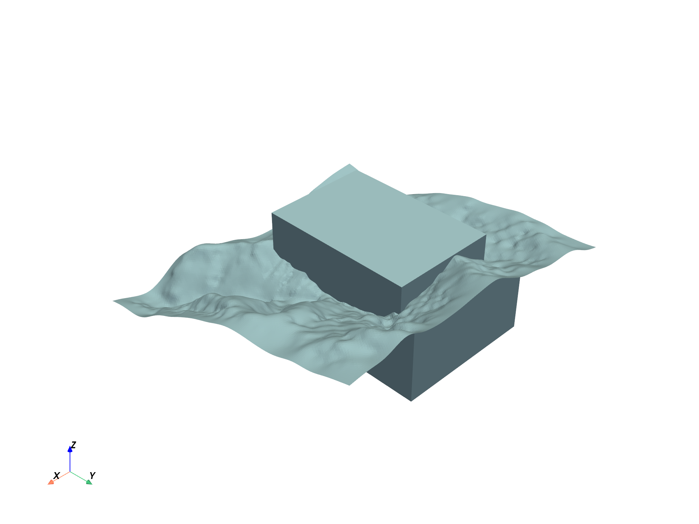
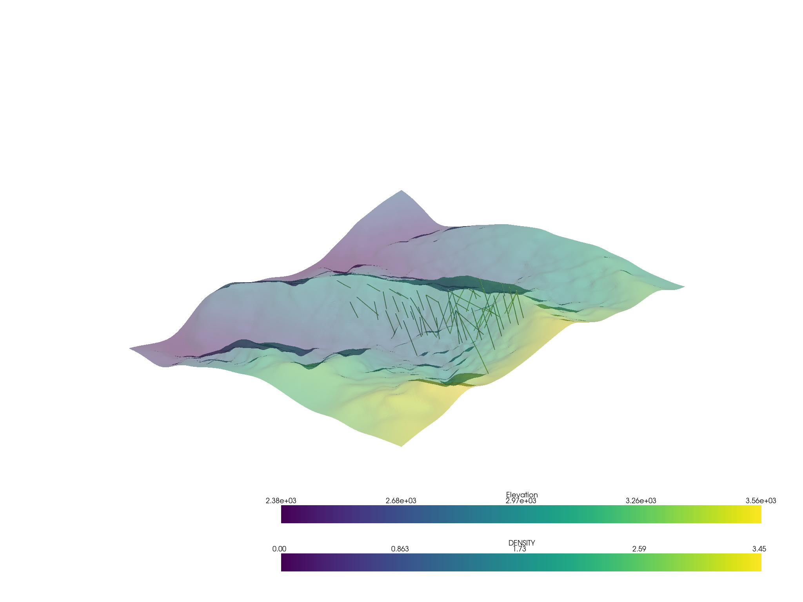
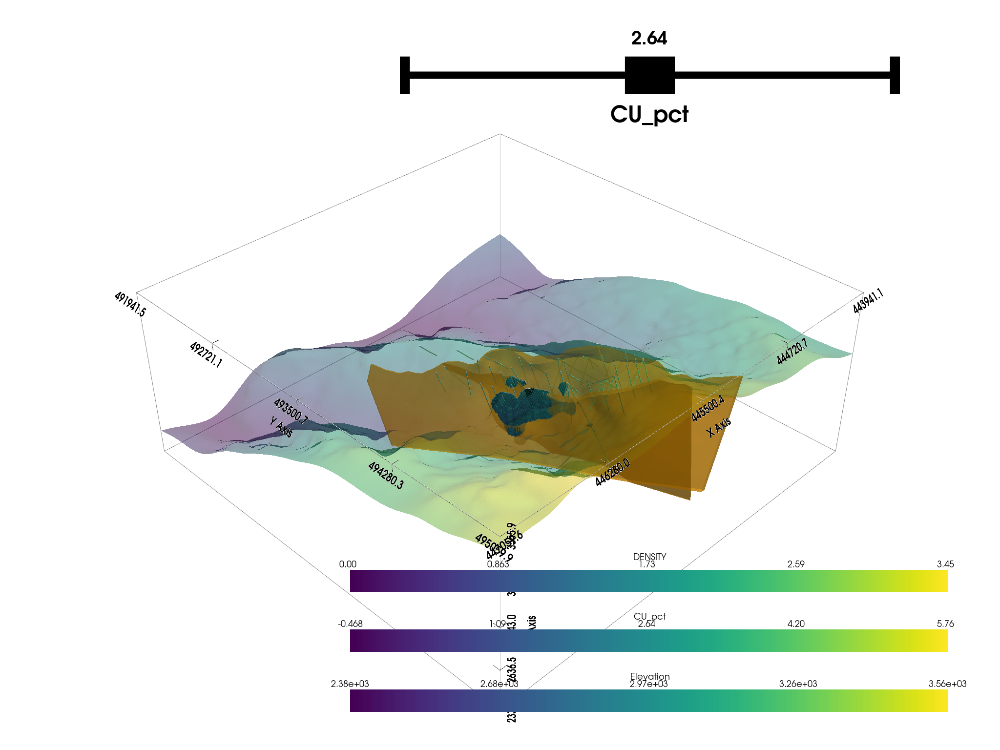

Note
Go to the end to download the full example code.
Create Block Model
We leverage the omfvista block model example. We load the model and convert to a parquet.
Later, we may use this model along with a correlation matrix for an iron ore dataset to create a pseudo-realistic iron ore block model for testing.
We can also up-sample the grid to create larger datasets for testing.
# REF: https://opengeovis.github.io/omfvista/examples/load-project.html#sphx-glr-examples-load-project-py
import omfvista
import pooch
import pyvista as pv
import pandas as pd
from omf import VolumeElement
from ydata_profiling import ProfileReport
Load
# Base URL and relative path
base_url = "https://github.com/OpenGeoVis/omfvista/raw/master/assets/"
relative_path = "test_file.omf"
# Create a Pooch object
p = pooch.create(
path=pooch.os_cache("geometallurgy"),
base_url=base_url,
registry={relative_path: None}
)
# Use fetch method to download the file
file_path = p.fetch(relative_path)
# Now you can load the file using omfvista
project = omfvista.load_project(file_path)
print(project)
MultiBlock (0x7fb8504f67a0)
N Blocks 9
X Bounds 443941.105, 447059.611
Y Bounds 491941.536, 495059.859
Z Bounds 2330.000, 3555.942
project.plot()

vol = project["Block Model"]
assay = project["wolfpass_WP_assay"]
topo = project["Topography"]
dacite = project["Dacite"]
assay.set_active_scalars("DENSITY")
p = pv.Plotter()
p.add_mesh(assay.tube(radius=3))
p.add_mesh(topo, opacity=0.5)
p.show()

Threshold the volumetric data
thresh_vol = vol.threshold([1.09, 4.20])
print(thresh_vol)
UnstructuredGrid (0x7fb8504f7c40)
N Cells: 92525
N Points: 107807
X Bounds: 4.447e+05, 4.457e+05
Y Bounds: 4.929e+05, 4.942e+05
Z Bounds: 2.330e+03, 3.110e+03
N Arrays: 1
Create a plotting window
p = pv.Plotter()
# Add the bounds axis
p.show_bounds()
p.add_bounding_box()
# Add our datasets
p.add_mesh(topo, opacity=0.5)
p.add_mesh(
dacite,
color="orange",
opacity=0.6,
)
# p.add_mesh(thresh_vol, cmap="coolwarm", clim=vol.get_data_range())
p.add_mesh_threshold(vol, scalars="CU_pct", show_edges=True)
# Add the assay logs: use a tube filter that varius the radius by an attribute
p.add_mesh(assay.tube(radius=3), cmap="viridis")
p.show()

Export the model data
# Create DataFrame
df = pd.DataFrame(vol.cell_centers().points, columns=['x', 'y', 'z'])
# Add the array data to the DataFrame
for name in vol.array_names:
df[name] = vol.get_array(name)
# set the index to the cell centroids
df.set_index(['x', 'y', 'z'], drop=True, inplace=True)
# Write DataFrame to parquet file
df.to_parquet('block_model_copper.parquet')
Profile
profile = ProfileReport(df.reset_index(), title="Profiling Report")
profile.to_file("block_model_copper_profile.html")
Summarize dataset: 0%| | 0/5 [00:00<?, ?it/s]
Summarize dataset: 0%| | 0/9 [00:01<?, ?it/s, Describe variable:x]
Summarize dataset: 11%|█ | 1/9 [00:01<00:13, 1.69s/it, Describe variable:x]
Summarize dataset: 11%|█ | 1/9 [00:01<00:13, 1.69s/it, Describe variable:y]
Summarize dataset: 22%|██▏ | 2/9 [00:01<00:11, 1.69s/it, Describe variable:z]
Summarize dataset: 33%|███▎ | 3/9 [00:03<00:10, 1.69s/it, Describe variable:CU_pct]
Summarize dataset: 44%|████▍ | 4/9 [00:03<00:03, 1.44it/s, Describe variable:CU_pct]
Summarize dataset: 44%|████▍ | 4/9 [00:03<00:03, 1.44it/s, Get variable types]
Summarize dataset: 50%|█████ | 5/10 [00:03<00:03, 1.44it/s, Get dataframe statistics]
Summarize dataset: 55%|█████▍ | 6/11 [00:03<00:03, 1.44it/s, Calculate auto correlation]
Summarize dataset: 64%|██████▎ | 7/11 [00:04<00:01, 2.04it/s, Calculate auto correlation]
Summarize dataset: 64%|██████▎ | 7/11 [00:04<00:01, 2.04it/s, Get scatter matrix]
Summarize dataset: 26%|██▌ | 7/27 [00:04<00:09, 2.04it/s, scatter x, x]
Summarize dataset: 30%|██▉ | 8/27 [00:04<00:08, 2.32it/s, scatter x, x]
Summarize dataset: 30%|██▉ | 8/27 [00:04<00:08, 2.32it/s, scatter y, x]
Summarize dataset: 33%|███▎ | 9/27 [00:04<00:06, 2.68it/s, scatter y, x]
Summarize dataset: 33%|███▎ | 9/27 [00:04<00:06, 2.68it/s, scatter z, x]
Summarize dataset: 37%|███▋ | 10/27 [00:04<00:05, 3.11it/s, scatter z, x]
Summarize dataset: 37%|███▋ | 10/27 [00:04<00:05, 3.11it/s, scatter CU_pct, x]
Summarize dataset: 41%|████ | 11/27 [00:04<00:04, 3.53it/s, scatter CU_pct, x]
Summarize dataset: 41%|████ | 11/27 [00:04<00:04, 3.53it/s, scatter x, y]
Summarize dataset: 44%|████▍ | 12/27 [00:04<00:03, 3.93it/s, scatter x, y]
Summarize dataset: 44%|████▍ | 12/27 [00:04<00:03, 3.93it/s, scatter y, y]
Summarize dataset: 48%|████▊ | 13/27 [00:05<00:03, 4.34it/s, scatter y, y]
Summarize dataset: 48%|████▊ | 13/27 [00:05<00:03, 4.34it/s, scatter z, y]
Summarize dataset: 52%|█████▏ | 14/27 [00:05<00:02, 4.74it/s, scatter z, y]
Summarize dataset: 52%|█████▏ | 14/27 [00:05<00:02, 4.74it/s, scatter CU_pct, y]
Summarize dataset: 56%|█████▌ | 15/27 [00:05<00:02, 4.84it/s, scatter CU_pct, y]
Summarize dataset: 56%|█████▌ | 15/27 [00:05<00:02, 4.84it/s, scatter x, z]
Summarize dataset: 59%|█████▉ | 16/27 [00:05<00:02, 5.12it/s, scatter x, z]
Summarize dataset: 59%|█████▉ | 16/27 [00:05<00:02, 5.12it/s, scatter y, z]
Summarize dataset: 63%|██████▎ | 17/27 [00:05<00:01, 5.22it/s, scatter y, z]
Summarize dataset: 63%|██████▎ | 17/27 [00:05<00:01, 5.22it/s, scatter z, z]
Summarize dataset: 67%|██████▋ | 18/27 [00:05<00:01, 5.65it/s, scatter z, z]
Summarize dataset: 67%|██████▋ | 18/27 [00:05<00:01, 5.65it/s, scatter CU_pct, z]
Summarize dataset: 70%|███████ | 19/27 [00:06<00:01, 5.79it/s, scatter CU_pct, z]
Summarize dataset: 70%|███████ | 19/27 [00:06<00:01, 5.79it/s, scatter x, CU_pct]
Summarize dataset: 74%|███████▍ | 20/27 [00:06<00:01, 5.83it/s, scatter x, CU_pct]
Summarize dataset: 74%|███████▍ | 20/27 [00:06<00:01, 5.83it/s, scatter y, CU_pct]
Summarize dataset: 78%|███████▊ | 21/27 [00:06<00:01, 5.75it/s, scatter y, CU_pct]
Summarize dataset: 78%|███████▊ | 21/27 [00:06<00:01, 5.75it/s, scatter z, CU_pct]
Summarize dataset: 81%|████████▏ | 22/27 [00:06<00:00, 5.85it/s, scatter z, CU_pct]
Summarize dataset: 81%|████████▏ | 22/27 [00:06<00:00, 5.85it/s, scatter CU_pct, CU_pct]
Summarize dataset: 85%|████████▌ | 23/27 [00:06<00:00, 5.99it/s, scatter CU_pct, CU_pct]
Summarize dataset: 79%|███████▉ | 23/29 [00:06<00:01, 5.99it/s, Missing diagram bar]
Summarize dataset: 83%|████████▎ | 24/29 [00:06<00:00, 6.68it/s, Missing diagram bar]
Summarize dataset: 83%|████████▎ | 24/29 [00:06<00:00, 6.68it/s, Missing diagram matrix]
Summarize dataset: 86%|████████▌ | 25/29 [00:07<00:01, 3.29it/s, Missing diagram matrix]
Summarize dataset: 86%|████████▌ | 25/29 [00:07<00:01, 3.29it/s, Take sample]
Summarize dataset: 90%|████████▉ | 26/29 [00:07<00:00, 3.29it/s, Detecting duplicates]
Summarize dataset: 93%|█████████▎| 27/29 [00:07<00:00, 3.93it/s, Detecting duplicates]
Summarize dataset: 93%|█████████▎| 27/29 [00:07<00:00, 3.93it/s, Get alerts]
Summarize dataset: 97%|█████████▋| 28/29 [00:07<00:00, 3.93it/s, Get reproduction details]
Summarize dataset: 100%|██████████| 29/29 [00:07<00:00, 3.93it/s, Completed]
Summarize dataset: 100%|██████████| 29/29 [00:07<00:00, 3.66it/s, Completed]
Generate report structure: 0%| | 0/1 [00:00<?, ?it/s]
Generate report structure: 100%|██████████| 1/1 [00:01<00:00, 1.14s/it]
Generate report structure: 100%|██████████| 1/1 [00:01<00:00, 1.14s/it]
Render HTML: 0%| | 0/1 [00:00<?, ?it/s]
Render HTML: 100%|██████████| 1/1 [00:00<00:00, 2.29it/s]
Render HTML: 100%|██████████| 1/1 [00:00<00:00, 2.29it/s]
Export report to file: 0%| | 0/1 [00:00<?, ?it/s]
Export report to file: 100%|██████████| 1/1 [00:00<00:00, 464.59it/s]
Total running time of the script: (0 minutes 21.452 seconds)